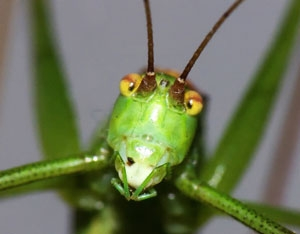

Wherever you find grass, you will also find grasshoppers, and a few of the hundreds of grasshopper species found in North America can be major garden pests. Cool, rainy summers cause many grasshoppers to fall prey to disease, while hot, dry weather can lead to major grasshopper headaches.
Hand-picking them is impractical, because with the help of their big compound eyes, grasshoppers see you before you see them. So what’s a grasshopper-plagued gardener to do? Here are six proven eco-safe strategies for dealing with hordes of ’hoppers.
Baby grasshoppers hatch in spring and early summer from eggs hidden just beneath the surface in soil. Young grasshoppers hide out in sheltered spots that are dense with vegetation, where most of them are eaten by spiders, ground beetles, frogs and other predators. Thus, islands of dense mixed herbs, grasses and flowers located in or near your garden can serve as early-season traps for young grasshoppers.
Insect-eating birds are major grasshopper predators, especially in early summer when they must gather high-protein food for their young. Many bug-eating birds like to hunt by watching for movement from a perch, so studding your garden with trellises, posts and other upright structures can help birds feed more efficiently.
The surest way to protect plants from hungry grasshoppers is to cover them with a barrier, such as a floating row cover or lightweight cloth. Be sure to hold the covers above plants with hoops or stakes, because grasshoppers are more likely to eat their way inside if leaves are pushing against the fabric. In west Texas and other areas where grasshoppers are especially bad, some gardeners make cones from aluminum screening to keep their plants safe from ’hoppers.
Chickens, ducks, guineas and other fowl eagerly snap up grasshoppers, but they can also damage garden plants. Ideally, you might let grassy pathways in your garden grow up a bit, and then move in a group of birds in a moveable pen.
Grasshoppers would rather live in a tall stand of grass and weeds than in your garden, so you may want to let a hedge of tall grass grow up near your garden’s edge in late summer. If you keep your garden weeded, grasshoppers will naturally gravitate toward the grassy patch.
In some areas of the West and Midwest, grasshoppers are so damaging that biological warfare is worthwhile. A naturally occurring fungus, Nosema locustae, weakens and kills grasshoppers when they eat it. Sold as Nolo Bait and Semaspore, this method can help you reduce grasshopper populations at your place over time, making them much easier to manage. Earthworms and most beneficial insects are not harmed by Nosema locustae, but it is damaging to crickets and mantids (both are closely related to grasshoppers). Crickets are major consumers of weed seeds and mantids eat other bugs, so there is a bit of a trade-off here. But for gardeners who can’t walk through their gardens without being socked in the head by a flying grasshopper, Nosema locustae baits are a good choice.
|
 PETER SCHERER/FOTOLIA Get grasshoppers under control with these safe, natural methods. |
|
|